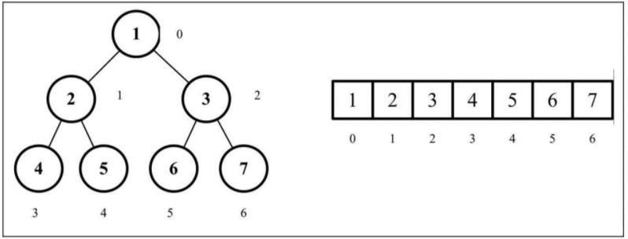

数据结构与算法-堆
《学习JavaScript数据结构与算法(第3版)》
堆数据结构，也叫二叉堆，是一种特殊的二叉树。由于堆能够高效、快速地找出最大值和最小值，常被应用于优先队列。
二叉堆数据结构
二叉堆是一种特殊地二叉树，有以下两个特性：
- 它是一棵完全二叉树，表示树的每一层都有左侧和右侧子节点（除了最后一层的叶节点），并且最后一层的叶节点尽可能都是左侧子节点，这叫作结构特性。
- 二叉堆不是最小堆就是最大堆。最小堆允许你快速导出树的最小值，最大堆允许你快速导出树的最大值。所有的节点都大于等于（最大堆）或小于等于（最小堆）每个它的子节点。这叫作堆特性。
二叉堆与二叉搜索树的区别
尽管二叉堆是二叉树，但并不一定是二叉搜索树（BST）。在二叉堆中，每个子节点都要大于等于父节点（最小堆）或小于等于父节点（最大堆）。然而在二叉搜索树中，左侧子节点总是比父节点小，右侧子节点也总是更大。
二叉树的数组表示
二叉树有两种表示方式。第一种是使用一个动态的表示方式，也就是指针（用节点表示）。第二种是使用一个数组，通过索引值检索父节点、左侧和右侧子节点的值。下图展示了两种不同的表示方式。
要访问使用普通数组的二叉树节点，我们可以用下面的方式操作index。
对于给定位置index的节点：
- 它的左侧子节点的位置是
2 * index + 1（如果位置可用）； - 它的右侧子节点的位置是
2 * index + 2（如果位置可用）； - 它的父节点位置是
Math.floor((index - 1) / 2)（如果位置可用）。
最大和最小堆
创建最小堆类
const Compare = {
LESS_THAN: -1,
BIGGER_THAN: 1,
EQUALS: 0
};
function defaultCompare(a, b) {
if (a === b) {
return Compare.EQUALS;
}
return a < b ? Compare.LESS_THAN : Compare.BIGGER_THAN;
}
// 互换位置
function swap(array, a, b) {
[array[a], array[b]] = [array[b], array[a]];
}
export class MinHeap {
constructor(compareFn = defaultCompare) {
this.compareFn = compareFn; // 比较存储在数据结构中的值
this.heap = []; // 使用数组来存储数据
}
// 堆的大小
size() {
return this.heap.length;
}
// 判断当前堆是否为空
isEmpty() {
return this.size() <= 0;
}
// 清除堆
clear() {
this.heap = [];
}
// 获得左子节点位置
getLeftIndex(index) {
return (2 * index) + 1;
}
// 获得右子节点位置
getRightIndex(index) {
return (2 * index) + 2;
}
// 获得父节点位置
getParentIndex(index) {
if (index === 0) {
return undefined;
}
return Math.floor((index - 1) / 2);
}
// 向堆中插入一个新的值，如果插入成功返回true，插入失败返回false
insert(value) {
if (value != null) {
this.heap.push(value); // 将值插入堆的底部叶节点
this.siftUp(this.heap.length - 1); // 将这个值和它的父节点交换直到父节点小于这个插入的值
return true;
}
return false;
}
// 上移操作，递归函数，将这个值和它的父节点交换直到父节点小于这个插入的值
siftUp(index) { // 接收插入值位置
let parent = this.getParentIndex(index); // 获取父节点
// 循环，直到父节点小于插入的值
while (
index > 0 &&
this.compareFn(this.heap[parent], this.heap[index]) === Compare.BIGGER_THAN
) {
// 插入值小于父节点
swap(this.heap, parent, index); // 父节点与插入值交换位置
index = parent; // 更新插入值位置
parent = this.getParentIndex(index); // 更新父节点引用
}
}
// 下移操作，递归函数，堆化
siftDown(index) {
let element = index;
const left = this.getLeftIndex(index); // 获取左侧子节点
const right = this.getRightIndex(index); // 获取右侧子节点
const size = this.size();
if (
left < size &&
this.compareFn(this.heap[element], this.heap[left]) === Compare.BIGGER_THAN
) {
// 左侧子节点索引小于堆的长度，表示有效值，当前元素比左侧子节点值大
element = left; // 记录左侧子节点位置
}
if (
right < size &&
this.compareFn(this.heap[element], this.heap[right]) === Compare.BIGGER_THAN
) {
// 右侧子节点索引小于堆的长度，表示有效值，当前元素比右侧子节点值大
element = right; // 记录右侧子节点位置
}
if (index !== element) { // 如果索引位置改变，需要移动位置
swap(this.heap, index, element); // 交换记录的位置
this.siftDown(element); // 继续下移操作
}
}
// 返回最小值（最小堆）且不会移除这个值
findMinimum() {
return this.isEmpty() ? undefined : this.heap[0];
}
// 移除最小值（最小堆），移除数组中的第一个元素（堆的根节点），并返回这个值
extract() {
if (this.isEmpty()) {
return undefined; // 如果堆为空，则没有值可以导出
}
if (this.size() === 1) { // 如果堆只有一个节点，则直接返回这个值并移除
return this.heap.shift();
}
// 堆有多个节点
const removedValue = this.heap[0]; // 将第一个值存储在临时变量中
this.heap[0] = this.heap.pop(); // 将堆的最后一个值替换堆的第一个值，避免树结构发生混乱
this.siftDown(0); // 执行下移操作，重新排列最小堆
return removedValue; // 返回被移除的值
}
}创建最大堆类
function reverseCompare(compareFn) { // 反转比较，和最小堆比较结果相反，将小于换为大于
return (a, b) => compareFn(b, a);
}
export class MaxHeap extends MinHeap {
constructor(compareFn = defaultCompare) {
super(compareFn);
this.compareFn = compareFn;
this.compareFn = reverseCompare(compareFn);
}
}堆排序算法
步骤：
- 用数组创建一个最大堆用作源数据。
- 在创建最大堆后，最大的值会被存储在堆的第一个位置。我们要将它替换为堆的最后一个值，将堆的大小减1。
- 最后，我们将堆的根节点下移并重复步骤2直到堆的大小为1。
// 堆排序算法
function heapSort(array, compareFn = defaultCompare) {
let heapSize = array.length;
buildMaxHeap(array, compareFn);
while (heapSize > 1) {
swap(array, 0, --heapSize); // 第一个元素和最后一个元素交换
heapify(array, 0, heapSize, compareFn); // 重新进行下移构建堆
}
return array;
}
// 构建最大堆
function buildMaxHeap(array, compareFn) {
for (let i = Math.floor(array.length / 2); i >= 0; i -= 1) {
heapify(array, i, array.length, compareFn); // 进行下移
}
return array;
}
// 下移函数
function heapify(array, index, heapSize, compareFn) {
let largest = index;
const left = (2 * index) + 1;
const right = (2 * index) + 2;
if (left < heapSize && compareFn(array[left], array[index]) > 0) {
largest = left;
}
if (right < heapSize && compareFn(array[right], array[largest]) > 0) {
largest = right;
}
if (largest !== index) {
swap(array, index, largest); // 交换
heapify(array, largest, heapSize, compareFn);
}
}堆排序算法是不稳定的排序算法，也就是说如果数组没有排好序，可能会得到不一样的结果。